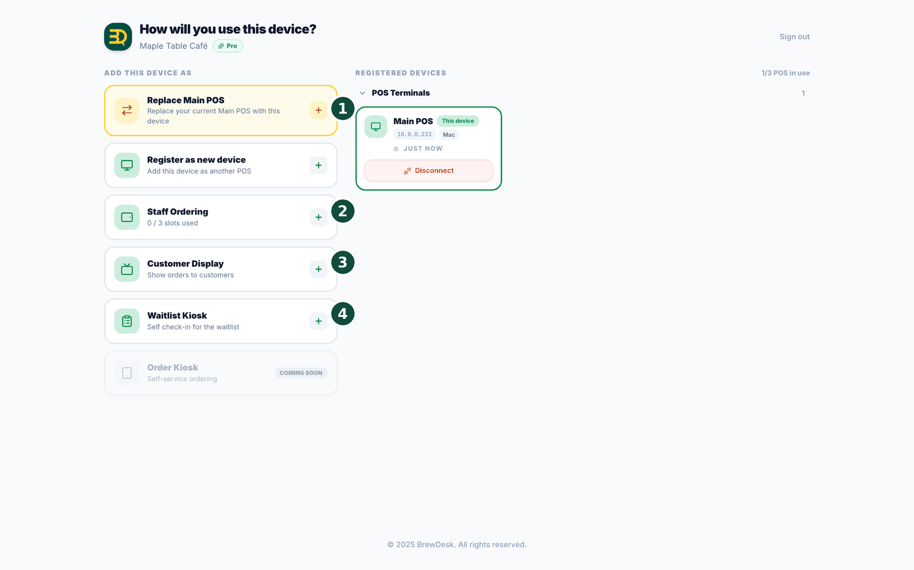

22Modos de dispositivo y pantalla para clientes
Cada dispositivo de BrewDesk tiene una función. El primer dispositivo de una tienda se convierte automáticamente en la caja principal (Main POS); a partir del segundo dispositivo, usted elige una de las funciones siguientes. Son estas:
- Main POS (POS principal): su caja principal; solo hay una por tienda. Para cambiarla en una tienda que ya tiene una, use Replace Main POS (Reemplazar POS principal), que requiere un código de verificación enviado por correo.
- Sub POS: una caja adicional de apoyo (Register as new device). Inicia sesión con el correo del propietario y escribe un código de verificación. (Plan Business; hasta 3 cajas incluida la principal).
- Staff Ordering (Pedidos del Personal): su personal toma pedidos desde cualquier tableta o teléfono de su red, y los pedidos van directamente a la caja principal. (Plan Pro; muestra cuántos "slots used" hay).
- Customer Display (Pantalla para clientes): una segunda pantalla que muestra a los clientes su pedido. (1 en Pro, hasta 3 en Business).
- Waitlist Kiosk: una pantalla de registro donde los clientes sin reserva se agregan solos a la lista de espera. (Antes se llamaba "Check-in").
- Order Kiosk: próximamente.
Staff Ordering y Customer Display se activan primero en la caja principal, en Settings › Add-ons (sección Devices); Staff Ordering es un complemento Pro. Luego registre el nuevo dispositivo así:

- Abra la app de BrewDesk en el nuevo dispositivo y conéctelo al mismo Wi-Fi de la tienda que la caja principal.
- En la pantalla de inicio de sesión, toque "Register as a new device at Main POS."
- En la caja principal aparece una ventana New device pairing request. En Device role (Rol del dispositivo), elija Staff Ordering, Customer Display o Waitlist Kiosk, y toque Approve.
- El nuevo dispositivo pasa directamente a la función que eligió.
Pedidos del personal
Staff Ordering permite que su equipo tome pedidos desde una tableta o un teléfono adicional. Los pedidos llegan directamente a la caja principal. Así se configura.
- En la caja principal, active Staff Ordering (Pedidos del Personal) en
Settings › Add-ons(sección Devices). Es un complemento Pro. - Abra la app de BrewDesk en la tableta o el teléfono adicional y conéctelo al mismo Wi-Fi de la tienda que la caja principal.
- En la pantalla de inicio de sesión, toque "Register as a new device at Main POS."
- En la ventana de la caja principal, en Device role (Rol del dispositivo), elija Staff Ordering (Pedidos del Personal) y toque Approve. (Pro permite hasta 3 dispositivos de pedidos del personal, Business no tiene límite; la pantalla de registro muestra "slots used").
- Su personal inicia sesión y empieza a tomar pedidos.
- Cada pedido llega solo a la caja principal. (Este dispositivo no tiene pantalla de pago ni ajustes del propietario: es solo para tomar pedidos).
Pantalla para clientes
Una pantalla para clientes es una segunda pantalla orientada hacia el cliente. Le muestra su pedido y el precio a medida que usted agrega productos. Así se configura.
Actívela en la caja principal en Settings › Add-ons › Customer Display y luego elija Customer Display (Pantalla para clientes) como función al registrar el dispositivo de reserva.
- Busque una tableta o pantalla de reserva, abra BrewDesk en ella y conéctela al mismo Wi-Fi de la tienda que la caja principal.
- En la pantalla de inicio de sesión, toque "Register as a new device at Main POS."
- En la ventana de la caja principal, en Device role (Rol del dispositivo), elija Customer Display (Pantalla para clientes) y toque Approve.
- La pantalla se une sola a su caja. No hace falta iniciar sesión.
- Ahora oriente la pantalla hacia el cliente. A medida que agrega productos en la caja, también aparecen en esta pantalla.
- El plan Pro le permite usar 1 pantalla. El plan Business le permite usar hasta 3.
Temas relacionados
¿Necesita más ayuda?
Puede enviar un ticket de soporte desde la app en Settings › Support.